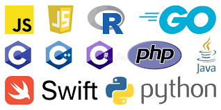

07.05.2024
Юридична служба закладу вищої освіти Юридична служба університету захистила права студентів у конфлікті з адміністрацією: Нещодавно юридична служба університету успішно вирішила спір між студентами та адміністрацією закладу щодо зміни умов навчання, забезпечивши справедливий розгляд питання та збереження прав студентів. Запуск нової програми правової підтримки: Юридична служба університету анонсувала запуск нової програми, спрямованої на надання правової підтримки студентам та викладачам у питаннях академічної доброчесності та інтелектуальної власності. Юридична служба провела семінар для викладачів: Юридична служба закладу вищої освіти організувала серію семінарів для викладачів, присвячених останнім змінам у законодавстві про освіту та їхньому впливу на навчальний процес. Університет створює онлайн-платформу для правових консультацій: В рамках розвитку юридичної підтримки, юридична служба університету оголосила про створення онлайн-платформи, де студенти та співробітники зможуть отримувати консультації з правових питань.
11.04.2024
Виграна справа про захист інтересів університету: Юридична служба університету здобула перемогу в судовій справі, захищаючи інтереси закладу від неправомірних претензій з боку зовнішніх організацій, забезпечивши тим самим стабільну роботу університету.
1. Курси Google AI Юридична служба розпочала співпрацю з місцевими адвокатами: Юридична служба університету уклала угоду про співпрацю з провідними місцевими адвокатами для надання студентам більшої кількості правових консультацій. Відкриття нової юридичної клініки на базі університету: В університеті відкрили юридичну клініку, де студенти-правники зможуть практикуватися, надаючи безкоштовну правову допомогу місцевим жителям під керівництвом досвідчених юристів.
2. Курс Microsoft AI Юридична служба провела тренінг із захисту прав студентів: Нещодавно юридична служба університету організувала тренінг для студентів, присвячений методам захисту своїх прав та роз'ясненню механізмів вирішення конфліктів з адміністрацією.